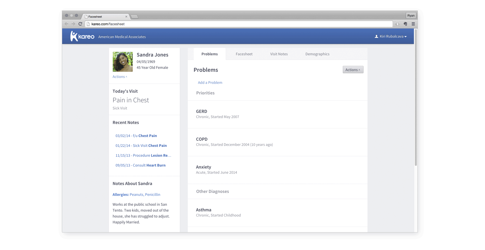

Problem
The current facesheet does not provide medical care providers with useful, actionable data about the patients they treat.
Approach
Design a summary of a patient's medical story that better serves common use cases.
Outcome
An interactive prototype using Kareo's front-end UI kit.
Existing Facesheet
Understanding the current state of the facesheet.
Serves as a Landing Page The facesheet is the first page shown every time a medical record is opened.
Summarizes Patient Data From drugs to medical history, the facesheet attempts to give an idea of everything going on with a patient.
Launches into other actions The facesheet provides links to every action that can be taken on a patient's medical record.
Research
Understanding how the different facesheet users expect it to behave.
Medical Providers
These are people almost universally crunched for time, and struggle to keep up to date on their patient's relevant data while keeping to their punishing schedules. Currently, the data in the facesheet is nothing more than a collection of data that isn't connected to any problems the patient deals with. This makes reviewing the facesheet data a time-consuming process and many providers skip the facesheet and review patient visit notes.
Providers need an actionable, easy to review home for their patients' medical data.
Medical Assistants
Most of the data entered about patients vitals, history, medications and other health information is gathered and entered by medical assistants or nurses. The current process is extremely time consuming and mindless, and wastes both the talents of the medical assitants and the short time frame of the visit.
Medical Assistants need a smoother process to enter and review data in the facesheet.
Patients
Although patients rarely see the facesheet itself, patient involvement in medical records is increasing, with messages to their providers, tracking health information, reviewing their history and sometimes entering their own data.
The facesheet should be built to be understood by patients. The presentation of the facesheet should adapt to patients' issues and data.
Research Summary
Current Facesheet designs try to be all things to all users, and end up not being as useful as they could be for anyone.
Ideation
Using common clinical workflows to focus the redesign.

First Round - Easing Data Entry One of the assumptions I made early in the project was that the data entry portion of the visit (Intake) was the main use of the facesheet. Early sketching and prototyping focused mostly on making the process of entering data into the facesheet a more seamless process, and did not address the information hierarchy as much.

Second Round - Focusing on the Patient's Story Through interviewing and testing, I discovered my assumption about how the facesheet was used was wrong. The clinical workflow typically involves entering all of the data in a Visit Note, which accumulates during the visit. With this discovery, the facesheet needed to take a new direction that would be most useful. I researched the idea of a problem focused medical record, one that puts the patient's issues as the most important organizing principle.

Prototyping the Concept
Translating the design to Kareo's interaction patterns and UI kit.

-
Problems
Patients come to medical providers to solve problems, so the facesheet should center around them.
 -
Problem - Expanded
Providing an at a glance summary of what's being done about a problem.
-
Facesheet
Giving hierarchy to the recorded data about a patient.
-
Notes
Notes are the documents of record for a medical visit, so the facesheet needs to allow easy access.
-
Note - Expanded
Allowing readers to get an idea of what's been done in past visits.